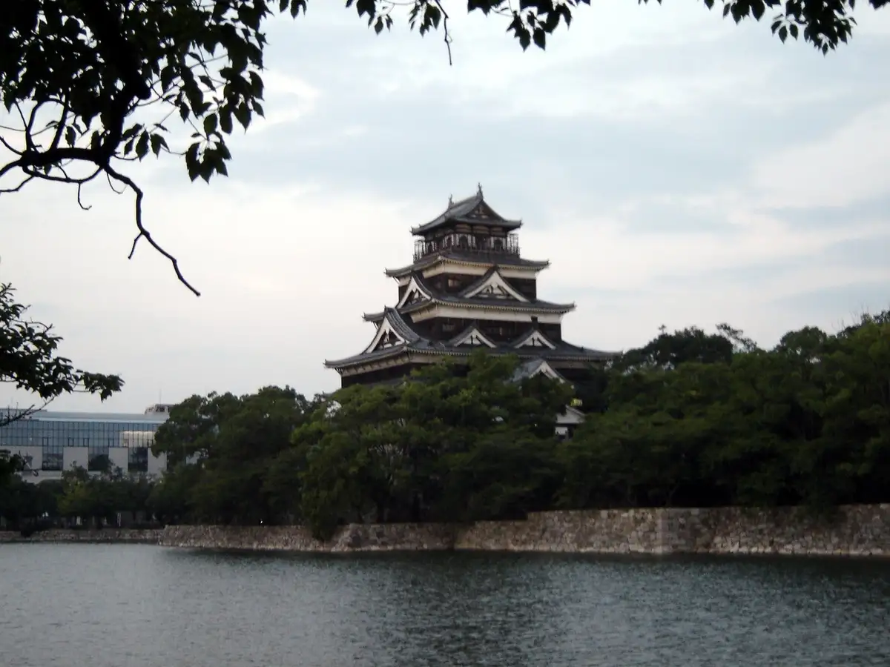

Hiroshima
Hiroshima · Hiroshima
Hiroshima
Highlighted on the Hiroshima map.

Stay
Hotel Akuteibu ! Hiroshima
fav Hiroshima Sutajiamu
fav Hiroshima Heiwa Odori
Nesuto Hotel Hiroshima Hatchobori
Nesuto Hotel Hiroshima Ekimae
Besseru Hotel Hiroshima Heiwa Odori (Hiroshima 2 Go Mise)
Chisan Hotel Hiroshima
Tennen Onsen Hotel Ribumakkusu PREMIUM Hiroshima
Tennen Onsen Shukkei Baths Supa Hotel Hiroshima Tennen Onsen Yagembori Tori
Dining
Chiso Sottaku Kazuto
Nagayama
Soshi
Kisetsu Ryori
Wagyu lab K
Tori Yamamoto
Nakatsuchi
Chugokuryori Masuki
NICON
DIRETTO
Sushi Matsu
Chugoku Na Kichijitsu
EPURE
hiroto
Sushi
Sushi
Onsen
Tennen Onsen Hotel Ribumakkusu PREMIUM Hiroshima Public Bath
Tennen Onsen Shukkei Baths Supa Hotel Hiroshima Tennen Onsen Yagembori Tori Public Bath
Experience
Orizuru Tawa Viewpoint
View from Orizuru Tower
Sights
Hiroshima Shiro
Hiroshima Castle
Gembaku Domu
Atomic Bomb Dome
Heiwa Memorial Park
Hiroshima Peace Memorial Park
Shukukeien
Shukkeien Garden
Hiroshima Prefectural Art Museum
Hiroshima Museum of Art
Mitaki Tera Taho to
Mitaki-dera Tahoto